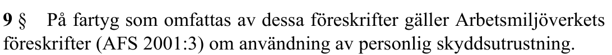
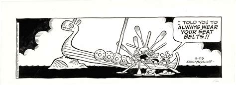
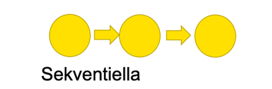
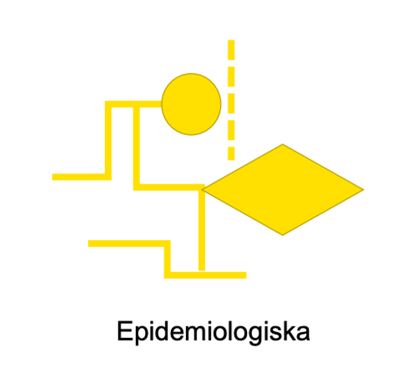
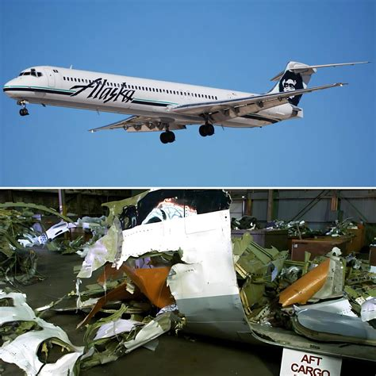
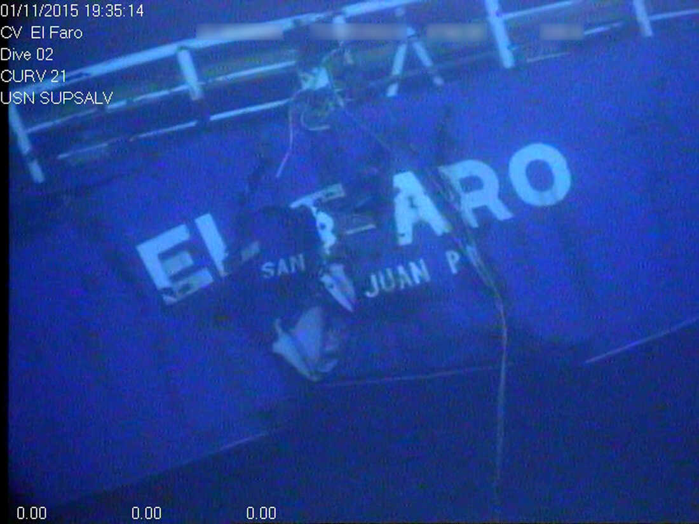

…så gäller AFS 2001:3
…och så vidare
Arbetsmiljölagen 3. kap. 2a§
“Arbetsgivaren ska planera, leda och kontrollera verksamheten…”
TSFS 2019:56 –> AFS 2001:1
“Arbetsgivaren ska regelbundet undersöka arbetsmiljöförhållandena…”
Arbetsmiljölagen 3. kap 2a§
“…han ska utreda arbetsskador…”
AFS 2001:1
“…ska arbetsgivaren utreda orsakerna…”
ISM-koden kap. 9
“…should include procedures ensuring…accidents are reported to the company, investigated and analysed”
Sjölagen 6 kap. 14§
Om befälhavarens ansvar att rapportera…
Vilka verktyg för att följa upp och rapportera kring arbetsmiljön har ni stött på ombord?
“A sequence of events and/or conditions that could have resulted in loss. This loss was prevented only by a fortuitous break in the chain of events”

1. Ett fartyg behöver plötsligt väja för en fiskebåt och seglar över ett område som är 7 m djupt i sjökortet. Djupgåendet för fartyget är 7,5 m. Lyckligtvis är det 1 m högvatten vid tillfället. Varningarna för djupkurvorna hade inte uppdaterats innan avgång.
2. En besättningsmedlem har inte rätt certifikat för sin tjänst.
3. Motormannen halkar på en blöt fläck och stukar foten. Han kan stödja på foten men har lite ont.


Del av främst den administrativa och juridiska processen - utreder ansvar
Analyserar orsaker till olyckan och ger rekommendationer för att förbättra säkerheten


NTSB/MAR-17/01; US Coast Guard, Report of Investigation (2017); NTSB:s utredningsakt DCA16MM001